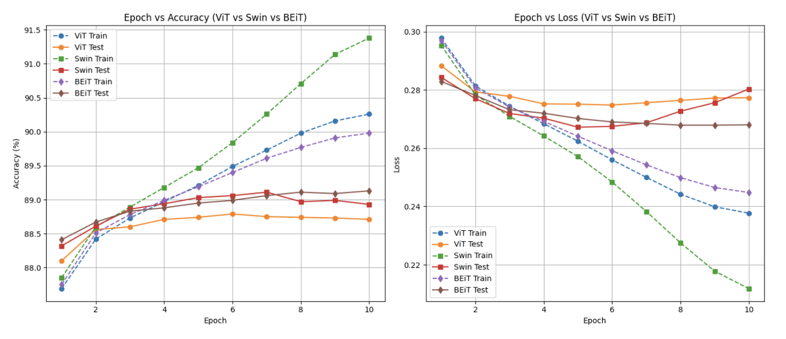
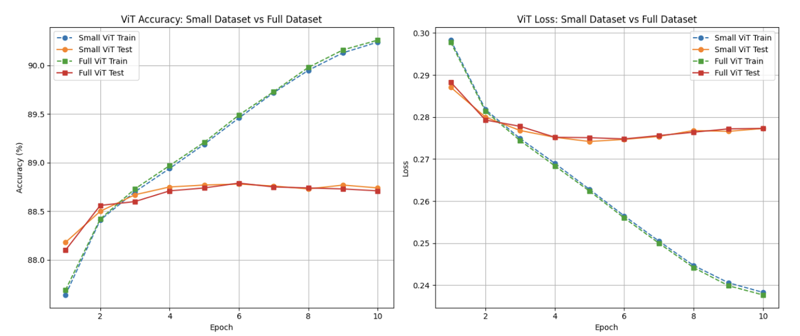
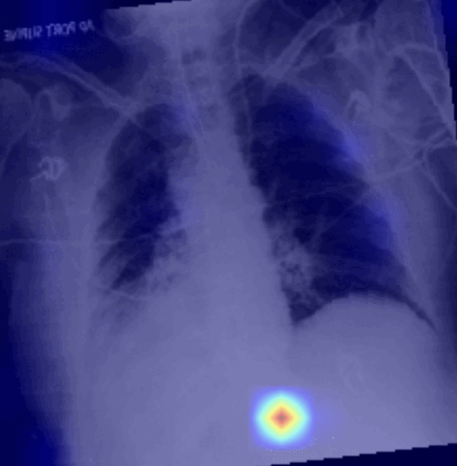

Abstract
Abstract
We utilized the CheXpert dataset, a large-scale chest X-ray benchmark, to perform multi-label classification of 14 thoracic diseases and to localize pathological regions using heatmap-based explainability techniques.
To accomplish this, we evaluated three vision transformer architectures—ViT, BEiT, and Swin Transformer.
Preliminary experiments on a test subset indicated that ViT outperformed the others in terms of classification accuracy. Based on this finding, we employed the ViT model on the full dataset to enhance diagnostic performance and improve the spatial precision of the generated heatmaps.
Dataset
We used the CheXpert-v1.0-small dataset, a downsized version of the original CheXpert dataset. It contains 224,316 chest radiographs from 65,240 patients, labeled with 14 clinical observations.
The labels were generated using an automated labeling system capable of detecting and classifying findings, including those with inherent uncertainty.
To ensure labeling reliability, a validation set of 200 studies was manually annotated by three board-certified radiologists.
Background (Three Vision Transformers)
The Vision Transformer (ViT) applies the standard Transformer architecture directly to image patches, treating them as sequences similar to words in natural language. It splits the input image into fixed-size patches and processes them with self-attention mechanisms. ViT is known for its simplicity and scalability, performing well with large datasets but requiring significant data and compute resources to outperform CNN-based models.
BEiT builds upon ViT by introducing a pretraining strategy similar to BERT in NLP. It treats image patches as discrete visual tokens and learns bidirectional representations using a masked image modeling objective. This enables the model to better capture contextual relationships within the image, significantly improving performance in downstream tasks, especially when labeled data is limited.
The Swin Transformer introduces a hierarchical architecture that processes images through non-overlapping local windows with shifted configurations across layers. This design enables both local and global representation learning while maintaining computational efficiency. Its ability to model long-range dependencies and multi-scale features makes it particularly effective for dense prediction tasks such as detection and segmentation.
Results

The graph presents a comparative evaluation of three transformer-based models:
Vision Transformer (ViT),
Swin Transformer, and
BEiT. Performance is tracked over 10 training epochs using
accuracy and
loss metrics on both training and test sets.
From the accuracy graph (left), the
Swin Transformer shows the highest training accuracy, but it underperforms on the test set. In contrast, the
BEiT model achieves the best test accuracy across epochs, suggesting stronger generalization to unseen data.
The loss graph (right) supports this observation.
BEiT maintains the lowest test loss throughout, indicating more consistent and reliable predictions. Meanwhile,
ViT and
Swin show either plateauing or increasing test loss, pointing to possible overfitting.
Overall, BEiT demonstrates the best balance between learning and generalization, making it the most robust among the three models in this evaluation.

The comparison between the full and downsampled datasets shows that model performance remains nearly unchanged, even when trained on significantly less data.
Despite the full dataset being over 400 GB and the downsampled version only 11 GB, accuracy and loss metrics are almost identical.
This finding highlights the potential for substantial resource savings—in terms of both storage and computational cost, without sacrificing model effectiveness.

The CLS token, designed to aggregate global information across the image, can be leveraged to create 2D attention heatmaps by visualizing how attention is distributed across patches.
The heatmaps show that as the model improves, its attention becomes more focused on disease-relevant regions.
Initially, the model fails to localize lesions accurately, but after training updates, it correctly highlights critical areas, demonstrating improved interpretability and diagnostic alignment.
Attention Visualization : ViT vs BEiT
ViT Attention

BEiT Attention
These GIFs illustrate how attention heads from two different transformer architectures—Vision Transformer (ViT) and BEiT—distribute focus across the input chest X-ray.
Left: ViT Attention
The attention patterns in ViT appear fragmented and inconsistent across heads. Some heads attend to irrelevant areas (e.g., image corners or blank regions), and there is limited focus on the actual lesion site. This suggests lower interpretability and a lack of specialization in directing attention toward disease-relevant features.
Right: BEiT Attention
BEiT shows more concentrated and structured attention patterns. As the heads cycle, the focus tends to remain closer to the lesion or medically meaningful regions, implying stronger feature localization. This behavior reflects BEiT’s enhanced representation learning and better alignment with diagnostic cues in the image.
Overall, these visualizations highlight how BEiT more effectively allocates attention across its heads, offering greater interpretability and potential reliability in medical imaging tasks compared to ViT.
Discussion And Future Work
We evaluated three transformer models (ViT, Swin, and BEiT Transformer) on the CheXpert dataset, using both full and reduced versions to assess their performance.
Among them, BEiT demonstrated the most robust results, attributed to its use of masked-image modeling during pre-training, which enhances generalization and the ability to capture diverse image features.
For future work, we plan to conduct robustness tests by introducing small Gaussian noise or perturbations to input images, measuring performance degradation, and applying additional training to improve model resilience if necessary.
Final Presentation Q&A
Q1. "How did you handle potential overfitting observed in ViT attention heatmaps?"
A1. "Initially, the ViT model exhibited signs of overfitting when trained to predict only 4 labels, as the limited and binary classification task (negative/positive) introduced significant randomness, causing the model to rely on guesswork rather than genuine pattern learning.
After properly training the model to predict all 14 labels—thus enriching the complexity and diversity of the training data—the ViT model showed substantially reduced overfitting.
This comprehensive labeling encouraged the model to learn robust features rather than memorizing limited patterns, ultimately resolving the issue of overfitting observed earlier."
Q2. “Can you provide insights into why BEiT achieved superior performance compared to ViT and Swin Transformers?”
A2. "BEiT’s superior performance likely stems from its effective pre-training strategy, specifically masked image modeling, which encourages the model to learn robust and generalized representations from image data.
Attention visualizations confirmed BEiT’s ability to consistently and precisely focus on clinically relevant regions, supporting the notion that BEiT develops better internal representations and decision-making capabilities tailored for medical diagnosis tasks."
Q3. “Can you provide more details on the benchmark comparison of the three transformer models?”
A3. "A comprehensive benchmark comparison of the three transformer-based models—ViT, Swin, and BEiT—was performed, evaluating their performance on accuracy, loss metrics, and interpretability through attention visualizations.
A complete and detailed analysis of these comparisons, highlighting key strengths and weaknesses of each model, can be found
here."
Team Members & Their Contributions
Zheng Hexing(2023311430) : Investigated the SWIN Transformer
Chang Hwan Kim(2024321234) : Implemented heatmap visualizations; contributed to the GitHub repository
Maftuna Ziyamova(2024311551) : Investigated Vision Transformers including ViT, BEIT, and SWIN; contributed to heatmap analysis
Lee Woo Bin(2025311560) : Investigated the BEIT Transformer; created and submitted the GitHub repository
We utilized the CheXpert dataset, a large-scale chest X-ray benchmark, to perform multi-label classification of 14 thoracic diseases and to localize pathological regions using heatmap-based explainability techniques.
To accomplish this, we evaluated three vision transformer architectures—ViT, BEiT, and Swin Transformer.
Preliminary experiments on a test subset indicated that ViT outperformed the others in terms of classification accuracy. Based on this finding, we employed the ViT model on the full dataset to enhance diagnostic performance and improve the spatial precision of the generated heatmaps.
We used the CheXpert-v1.0-small dataset, a downsized version of the original CheXpert dataset. It contains 224,316 chest radiographs from 65,240 patients, labeled with 14 clinical observations.
The labels were generated using an automated labeling system capable of detecting and classifying findings, including those with inherent uncertainty.
To ensure labeling reliability, a validation set of 200 studies was manually annotated by three board-certified radiologists.

From the accuracy graph (left), the Swin Transformer shows the highest training accuracy, but it underperforms on the test set. In contrast, the BEiT model achieves the best test accuracy across epochs, suggesting stronger generalization to unseen data.
The loss graph (right) supports this observation. BEiT maintains the lowest test loss throughout, indicating more consistent and reliable predictions. Meanwhile, ViT and Swin show either plateauing or increasing test loss, pointing to possible overfitting.
Overall, BEiT demonstrates the best balance between learning and generalization, making it the most robust among the three models in this evaluation.
The comparison between the full and downsampled datasets shows that model performance remains nearly unchanged, even when trained on significantly less data.
Despite the full dataset being over 400 GB and the downsampled version only 11 GB, accuracy and loss metrics are almost identical.
This finding highlights the potential for substantial resource savings—in terms of both storage and computational cost, without sacrificing model effectiveness.
The CLS token, designed to aggregate global information across the image, can be leveraged to create 2D attention heatmaps by visualizing how attention is distributed across patches.
The heatmaps show that as the model improves, its attention becomes more focused on disease-relevant regions.
Initially, the model fails to localize lesions accurately, but after training updates, it correctly highlights critical areas, demonstrating improved interpretability and diagnostic alignment.
These GIFs illustrate how attention heads from two different transformer architectures—Vision Transformer (ViT) and BEiT—distribute focus across the input chest X-ray.
Left: ViT Attention
The attention patterns in ViT appear fragmented and inconsistent across heads. Some heads attend to irrelevant areas (e.g., image corners or blank regions), and there is limited focus on the actual lesion site. This suggests lower interpretability and a lack of specialization in directing attention toward disease-relevant features.
Right: BEiT Attention
BEiT shows more concentrated and structured attention patterns. As the heads cycle, the focus tends to remain closer to the lesion or medically meaningful regions, implying stronger feature localization. This behavior reflects BEiT’s enhanced representation learning and better alignment with diagnostic cues in the image.
Overall, these visualizations highlight how BEiT more effectively allocates attention across its heads, offering greater interpretability and potential reliability in medical imaging tasks compared to ViT.
We evaluated three transformer models (ViT, Swin, and BEiT Transformer) on the CheXpert dataset, using both full and reduced versions to assess their performance.
Among them, BEiT demonstrated the most robust results, attributed to its use of masked-image modeling during pre-training, which enhances generalization and the ability to capture diverse image features.
For future work, we plan to conduct robustness tests by introducing small Gaussian noise or perturbations to input images, measuring performance degradation, and applying additional training to improve model resilience if necessary.
Q1. "How did you handle potential overfitting observed in ViT attention heatmaps?"
A1. "Initially, the ViT model exhibited signs of overfitting when trained to predict only 4 labels, as the limited and binary classification task (negative/positive) introduced significant randomness, causing the model to rely on guesswork rather than genuine pattern learning.After properly training the model to predict all 14 labels—thus enriching the complexity and diversity of the training data—the ViT model showed substantially reduced overfitting.
This comprehensive labeling encouraged the model to learn robust features rather than memorizing limited patterns, ultimately resolving the issue of overfitting observed earlier."
Q2. “Can you provide insights into why BEiT achieved superior performance compared to ViT and Swin Transformers?”
A2. "BEiT’s superior performance likely stems from its effective pre-training strategy, specifically masked image modeling, which encourages the model to learn robust and generalized representations from image data.Attention visualizations confirmed BEiT’s ability to consistently and precisely focus on clinically relevant regions, supporting the notion that BEiT develops better internal representations and decision-making capabilities tailored for medical diagnosis tasks."
Q3. “Can you provide more details on the benchmark comparison of the three transformer models?”
A3. "A comprehensive benchmark comparison of the three transformer-based models—ViT, Swin, and BEiT—was performed, evaluating their performance on accuracy, loss metrics, and interpretability through attention visualizations.A complete and detailed analysis of these comparisons, highlighting key strengths and weaknesses of each model, can be found here."
Zheng Hexing(2023311430) : Investigated the SWIN Transformer
Chang Hwan Kim(2024321234) : Implemented heatmap visualizations; contributed to the GitHub repository
Maftuna Ziyamova(2024311551) : Investigated Vision Transformers including ViT, BEIT, and SWIN; contributed to heatmap analysis
Lee Woo Bin(2025311560) : Investigated the BEIT Transformer; created and submitted the GitHub repository